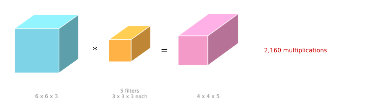
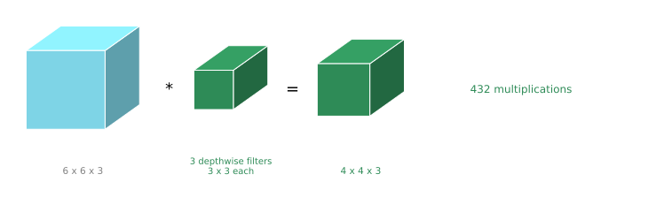
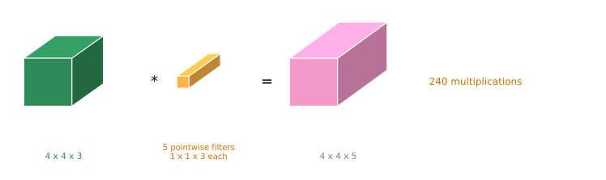
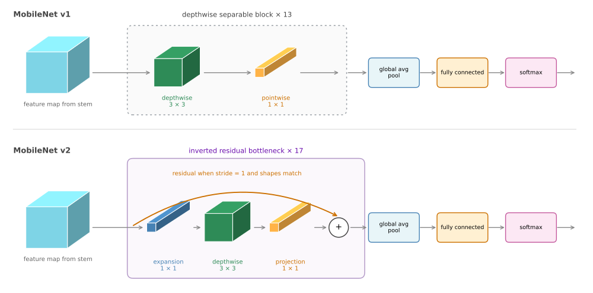
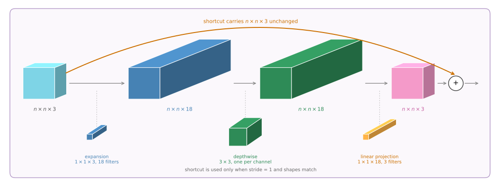
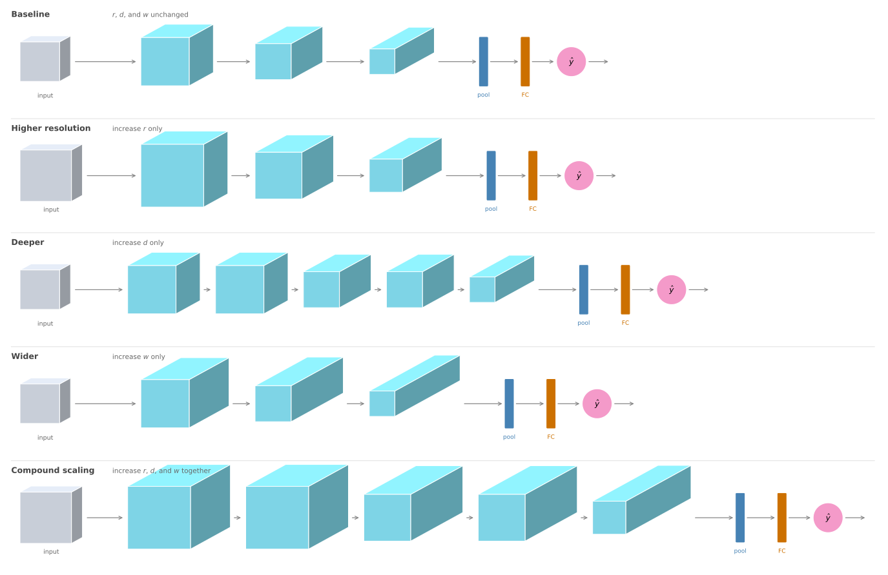

filter parameters 3 x 3 x 3 = 27
filter positions 4 x 4 = 16
number of filters = 5
total multiplications = 2,160MobileNet and EfficientNet
deep-learning
convolutional-neural-networks
computer-vision
architecture
mobilenet
efficientnet
How a depthwise separable convolution cuts cost by roughly ten times, how MobileNet v2 adds expansion and projection, and how EfficientNet scales a network to a device.
The networks covered so far are all quite computationally expensive. If you want a network to run on a device with a less powerful CPU or GPU, such as a mobile phone or an embedded device, MobileNet is an architecture that performs much better under that constraint. The idea at its heart is the depthwise separable convolution.
Normal Convolution, Recounted
To see what changes, it helps to first count the cost of a normal convolution.
Take an input that is \(n \times n \times n_C\), say 6 by 6 by 3, and convolve it with a filter that is \(f \times f \times n_C\), so 3 by 3 by 3. You place the filter over a region, do 27 multiplications, sum them, and that gives one output value. Then you shift the filter, do 27 more, and keep going until all the output values are computed. With no padding and a stride of one the output is 4 by 4.
Rather than one filter you usually have \(n_C'\) of them. With five filters the output is 4 by 4 by 5.
The total number of multiplications is the number of filter parameters, times the number of filter positions, times the number of filters.

Remember that 2,160. The depthwise separable convolution takes the same 6 by 6 by 3 input to the same 4 by 4 by 5 output for far fewer.
Depthwise Separable Convolution
The depthwise separable convolution has two steps, a depthwise convolution followed by a pointwise convolution.
Depthwise Step
The input is still 6 by 6 by 3. The filter, though, is \(f \times f\) rather than \(f \times f \times n_C\), so just 3 by 3, and the number of filters is \(n_C\), which here is 3.
The key change is how they are applied. You apply one filter to one input channel, matching them up one to one, rather than every filter looking at every channel.
Taking the first filter and the first channel, you position it, carry out nine multiplications rather than 27, and add them up. Shift it along and repeat until all 16 values of the first output channel are computed. Then the second filter runs over the second channel, and the third over the third. The output is \(n_{out} \times n_{out} \times n_C\), which is 4 by 4 by 3, the same number of channels as the input.

Because each of the 4 by 4 by 3 output values required nine multiplications, the cost is the filter size times the number of positions times the number of filters.
Pointwise Step
The depthwise step produced a 4 by 4 by 3 volume, but the output wanted is 4 by 4 by 5. The remaining step is a pointwise convolution, which is the one by one convolution under another name.
Take the intermediate \(n_{out} \times n_{out} \times n_C\) values and convolve with a filter that is \(1 \times 1 \times n_C\), so 1 by 1 by 3 here. At each position that costs three multiplications and produces one number. Using \(n_C' = 5\) such filters gives the 4 by 4 by 5 output.

depthwise 3x3 params, 4x4 positions, 3 filters = 432
pointwise 1x1x3 params, 4x4 positions, 5 filters = 240
total = 672
normal convolution, same input and output = 2,160
ratio = 672 / 2,160 = 0.311So the depthwise separable convolution was about 31 percent as expensive as the normal convolution, for the same input and the same output.
General Saving
The MobileNet authors showed that in general the ratio of the cost of the depthwise separable convolution to the normal convolution is
\[ \frac{1}{n_C'} + \frac{1}{f^2} \]
In this example that is \(\frac{1}{5} + \frac{1}{9}\), which is the 0.31 just computed. In a more typical network \(n_C'\) is much larger.
n_C' = 5, f = 3 ratio = 1/5 + 1/9 = 0.3111 about 3.2 times cheaper
n_C' = 64, f = 3 ratio = 1/64 + 1/9 = 0.1267 about 7.9 times cheaper
n_C' = 256, f = 3 ratio = 1/256 + 1/9 = 0.1150 about 8.7 times cheaper
n_C' = 512, f = 3 ratio = 1/512 + 1/9 = 0.1131 about 8.8 times cheaperWith 512 output channels the \(1/n_C'\) term is negligible and the ratio is essentially \(1/f^2\), which for a 3 by 3 filter is one ninth. So very roughly, a depthwise separable convolution is about ten times cheaper than a normal one. That is why it works as the building block of a network that has to run inference efficiently.
One detail on the diagrams. The depthwise separable convolution works for any number of input channels. If the input had six channels then \(n_C = 6\) and you would need 3 by 3 by 6 filters, with the intermediate output becoming 4 by 4 by 6. To keep the diagrams simple, the depthwise operation is still drawn as a stack of three filters even when there are more, so treat that icon as notation rather than a literal count.
Review Questions
1. What is the single structural difference between a normal convolution and the depthwise step?
TipAnswer
Which channels each filter looks at. In a normal convolution every filter is \(f \times f \times n_C\) and spans all the input channels, mixing them into one number. In the depthwise step each filter is just \(f \times f\) and is matched one to one with a single input channel, so there is no mixing across channels at all. That is also why the depthwise output has exactly as many channels as its input.
1. Why is a pointwise step needed after the depthwise step?
TipAnswer
Two reasons, and they are the two things the depthwise step cannot do. It cannot change the number of channels, because it produces one output channel per input channel, and it cannot combine information across channels, because each filter sees only one. The pointwise 1 by 1 convolution does both, mixing all \(n_C\) channels at each position and producing as many output channels as it has filters.
1. Where does the \(\frac{1}{n_C'} + \frac{1}{f^2}\) formula come from intuitively?
TipAnswer
The normal cost is \(f^2 n_C \cdot P \cdot n_C'\) for \(P\) positions. The depthwise cost is \(f^2 \cdot P \cdot n_C\), which is the normal cost divided by \(n_C'\), since the depthwise step does not multiply by the number of output filters. The pointwise cost is \(n_C \cdot P \cdot n_C'\), which is the normal cost divided by \(f^2\), since the pointwise filter is 1 by 1 rather than \(f\) by \(f\). Adding the two fractions gives the formula.
1. Which of the following are true about depthwise separable convolutions? Check all that apply.
A depthwise separable convolution is composed of two different types of convolution.
The depthwise convolution convolves the input volume with \(1 \times 1\) filters over the depth dimension.
The pointwise convolution convolves the output volume with \(1 \times 1\) filters.
The depthwise convolution convolves each channel in the input volume with a separate filter.
TipAnswer
a, c, and d. The operation is a depthwise convolution followed by a pointwise convolution, which are the two types in option a. The depthwise step pairs one \(f \times f\) filter with each input channel and never mixes across channels, so its output has as many channels as its input, which is option d. The pointwise step is the \(1 \times 1\) one, and the number of \(1 \times 1\) filters is what sets the channel count of the final output, which is option c. Option b assigns the \(1 \times 1\) filter to the wrong step, since a \(1 \times 1\) filter spanning the depth dimension describes the pointwise convolution, not the depthwise one.
MobileNet Architecture
The idea of MobileNet is that everywhere you previously used an expensive convolutional operation, you now use a much cheaper depthwise separable one.
The MobileNet v1 paper, Howard et al. (2017), applies an initial standard convolution and then repeats a depthwise separable block 13 times. After those 13 blocks the network ends with the usual pooling layer, a fully connected layer, and a softmax.
MobileNet v2, Sandler, Howard, Zhu, Zhmoginov, and Chen (2018), makes two changes. The first is the addition of a residual connection, the same skip connection idea as in ResNet, which takes the input from the previous layer and passes it directly to the output so that gradients propagate backward more efficiently. The second is an expansion layer placed before the depthwise convolution. The pointwise convolution that follows is then called a projection. It is the same operation as before, with a different name for a reason that becomes clear below. MobileNet v2 repeats its block 17 times, then finishes with the usual pooling, fully connected, and softmax layers.

Bottleneck Block
Follow an input of \(n \times n \times 3\) through the v2 block.

When the stride is one and the input and output shapes match, the residual connection passes the input directly to the addition, exactly as in ResNet. On the main path, you first apply the expansion operator, a 1 by 1 by 3 convolution but with a large number of filters, say 18. A factor of six is typical in MobileNet v2, which is why the input goes from \(n \times n \times 3\) to \(n \times n \times 18\). That is what makes it an expansion, since it increases the channel count sixfold.
Next comes the depthwise convolution. With a little padding it maps \(n \times n \times 18\) to the same dimensions, so the volume does not shrink.
Finally the pointwise convolution, here with a 1 by 1 by 18 filter. With three such filters the output is \(n \times n \times 3\). This last step is called a projection because it projects down from \(n \times n \times 18\) back to \(n \times n \times 3\).
Why go to all that trouble? The bottleneck block accomplishes two things at once. By expanding, it increases the size of the representation inside the block, which lets the network learn a richer function. There is simply more computation happening in there. But when deploying to a mobile or edge device you are often under heavy memory constraints, so the projection step brings it back down to a small set of values, and the amount of memory needed to store what passes to the next block is reduced again.
That is the clever part. The block enables a richer set of computations, letting the network learn more complex functions, while keeping the size of the activations passed from layer to layer relatively small. That is why MobileNet v2 gets better performance than v1 while still using only a modest amount of compute and memory.
Review Questions
1. The expansion layer makes the block do more computation, not less. How is that consistent with MobileNet being an efficient architecture?
TipAnswer
The two costs being managed are different. Computation inside a block is spent where it buys a richer function, and the depthwise separable convolution keeps even the expanded computation about ten times cheaper than a normal convolution would be. Memory is the constraint that the projection addresses, because what limits an edge device is often the size of the activations that have to be held and passed between blocks, not the arithmetic within one. The block expands to compute, then projects to store.
1. Why is the pointwise convolution called a projection in v2 when it is the same operation as in v1?
TipAnswer
The name describes what it does in context rather than what it is. In v1 the pointwise step usually increases or maintains the channel count, mixing channels to produce the block’s output. In v2 it follows an expansion, so its job is to bring \(n \times n \times 18\) back down to \(n \times n \times 3\), projecting the wide representation into a narrow one. The operation is identical, a 1 by 1 convolution.
1. In a MobileNet v2 bottleneck block the input volume has shape \(64 \times 64 \times 16\). The expansion uses 32 filters and the projection uses 16. Assuming padding='same', what are the input and output shapes of the depthwise convolution?
\(64 \times 64 \times 16\), then \(64 \times 64 \times 32\)
\(64 \times 64 \times 32\), then \(64 \times 64 \times 16\)
\(32 \times 32 \times 32\), then \(32 \times 32 \times 32\)
\(64 \times 64 \times 32\), then \(64 \times 64 \times 32\)
TipAnswer
d. The depthwise convolution sits after the expansion, so what reaches it is the expansion output, and 32 expansion filters make that \(64 \times 64 \times 32\). Same padding leaves the height and width alone, and the depthwise step cannot change the channel count because it produces exactly one output channel per input channel, so the output is \(64 \times 64 \times 32\) as well. The 16 projection filters only take effect in the step after this one, which is what makes options a and b wrong. Option c changes the height and width, which same padding does not do at a stride of one.
EfficientNet
MobileNet gives a way to build a more computationally efficient network. But is there a way to tune a network to a specific device? You might be implementing a computer vision algorithm for different brands of phone with different amounts of compute, or for different edge devices. With a little more computation available you might want a slightly bigger network and a bit more accuracy, and when more constrained you might want a slightly smaller and faster one at the cost of some accuracy.
EfficientNet gives a way to scale up or down automatically. Starting from a baseline architecture, there are three things you can change.
- The resolution \(r\) of the input image.
- The depth \(d\) of the network, meaning how many layers it has.
- The width \(w\) of the layers, meaning how many channels each has.

The question is, given a particular computational budget, what is a good choice of \(r\), \(d\), and \(w\)? You can also use compound scaling, where you scale all three at once. The tricky part is the rate at which each should grow. Should you double the resolution and leave the depth alone, or double the depth, or increase resolution by 10 percent, depth by 50 percent, and width by 20 percent? Finding the best trade-off within a computational budget is what EfficientNet automates.
The authors of the EfficientNet paper, Tan and Le (2019), are Mingxing Tan and Quoc Le. If you ever need to adapt an architecture to a particular device, look at one of the open source implementations, which will help you choose a good trade-off between \(r\), \(d\), and \(w\).
With MobileNet you have a way to build more computationally efficient layers, and with EfficientNet a way to scale a network up or down for the resources of the device you are targeting. Together they are what make it practical to run convolutional networks on mobile and embedded hardware.
Review Questions
1. What are the three quantities EfficientNet scales, and why is scaling only one of them usually a poor choice?
TipAnswer
Resolution \(r\), depth \(d\), and width \(w\). Scaling one alone tends to saturate. A higher resolution image carries more detail, but without more depth the network has too few layers to build up large enough receptive fields to use it, and without more width too few channels to represent the extra patterns. Compound scaling raises all three together so that each increase can actually be exploited by the others.
1. A depthwise separable convolution is roughly ten times cheaper than a normal one. Why is that not the whole story for a mobile device?
TipAnswer
Because compute is only one of the constraints. Memory matters just as much, since an edge device has to hold the activations passing between layers. That is exactly why MobileNet v2 adds the projection step, keeping the stored representation small even though the block internally expands. And neither of those addresses fitting the network to a specific device’s budget, which is what EfficientNet is for.
References
- Howard, A. G., Zhu, M., Chen, B., Kalenichenko, D., Wang, W., Weyand, T., et al. (2017). MobileNets: Efficient convolutional neural networks for mobile vision applications. arXiv. https://doi.org/10.48550/arXiv.1704.04861
- Sandler, M., Howard, A., Zhu, M., Zhmoginov, A., & Chen, L.-C. (2018). MobileNetV2: Inverted residuals and linear bottlenecks. In 2018 IEEE/CVF Conference on Computer Vision and Pattern Recognition (pp. 4510-4520). IEEE. https://doi.org/10.1109/CVPR.2018.00474
- Tan, M., & Le, Q. V. (2019). EfficientNet: Rethinking model scaling for convolutional neural networks. arXiv. https://doi.org/10.48550/arXiv.1905.11946